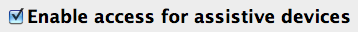

Timing has been designed to not only track the application you are currently working in, but also which specific document you are editing. In order to be able to find out the path to that document, a specific setting in System Preferences needs to be enabled. This article tells you how to enable this setting.
- Click this link: Open Security & Privacy Preferences
- Wait until System Preferences has finished loading.
- Navigate to the Accessibility section of the Privacy pane, if it isn't already selected.
- Enable TimingHelper in the list of applications.
Under Mountain Lion and earlier, perform the following steps instead:
- Click this link: Open Accessibility Preferences
- Wait until System Preferences has finished loading.
- Click the checkbox that says "Enable access for assistive devices", which looks like this: 